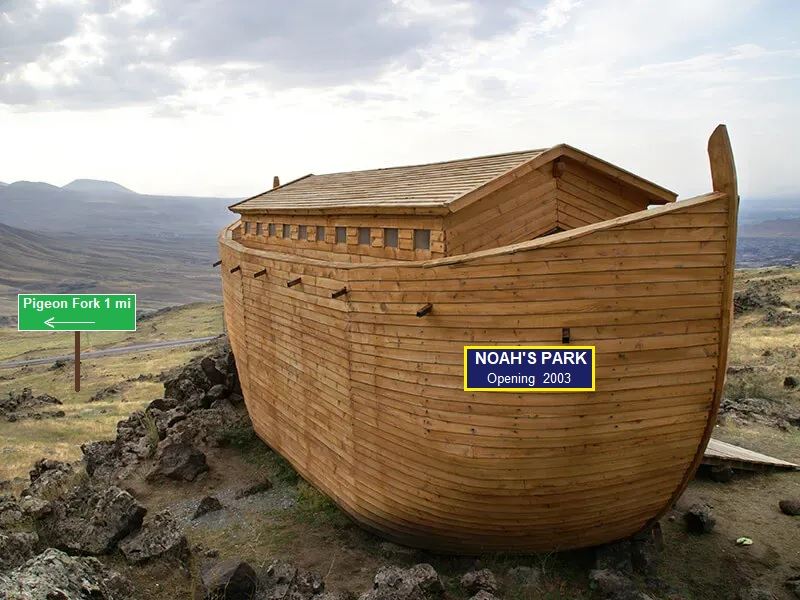

NoahsParkFilm.com

(c) Jim Terr 2020
AUTHOR NOTE: I realize now I got the idea for the location
(unconsciously) from Pigeon FORGE (where Dollywood is located).
Now that I've figured that out, the location will definitely NOT be called
Pigeon Fork or Pigeon anything, to avoid any confusion.
My apologies!